Random Walk stochastic volatility steady-state BVAR (Clark, 2011)
Source:vignettes/RW-stochastic-volatility-steady-state-BVAR.Rmd
RW-stochastic-volatility-steady-state-BVAR.RmdHere we estimate the steady-state BVAR model with Random Walk
stochastic volatility from Clark (2011), which is an extension of the
original homoscedastic steady-state BVAR model (Villani, 2009). See
?bvar for details.
We will use a quarterly US data set from Koop and Korobilis (2010) on the inflation rate \(\Delta \pi_t\) (the annual percentage change in a chain-weighted GDP price index), the unemployment rate \(u_t\) (seasonally adjusted civilian unemployment rate, all civilian workers aged 16 years or older) and the interest rate \(r_t\) (yield on the three-month Treasury bill rate). The sample is 1953Q1-2006Q3 and we have
\[ y_t = \begin{pmatrix} \Delta \pi_t \\ u_t \\ r_t \end{pmatrix} \]
First, let’s load the package, then import and plot the data.
library(SteadyStateBVAR)
data("KoopKorobilis2010")
yt <- KoopKorobilis2010
plot.ts(yt)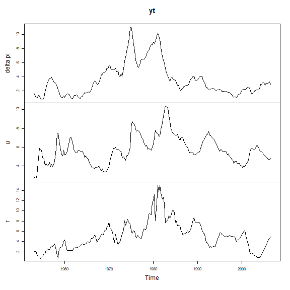
Let’s create the bvar object which we will use throughout here.
bvar_obj <- bvar(data = yt)We choose 4 lags and only a constant as the deterministic variable.
bvar_obj <- setup(bvar_obj,
p=4,
deterministic = "constant")We set the overall tightness to \(\lambda_1 = 0.20\), cross-equation tightness to \(\lambda_2 = 0.50\) and the lag decay rate to \(\lambda_3 = 1.00\). For the prior means on the first own lags, we set them to \(0.6\) for \(\Delta \pi_t\) and \(0.9\) for \(u_t\) and \(r_t\). Note that the prior mean on the first own lag of inflation is set to \(0.6\) instead of \(0\) to reflect some degree of persistence in the series (even though it is a growth rate variable).
lambda_1 <- 0.20
lambda_2 <- 0.50
lambda_3 <- 1.00
fol_pm=c(0.6, # delta pi
0.9, #u
0.9) #RNow, for the steady-state coefficients we use some toy values (lets pretend that they are expert based). Remember that we only have a constant now, so \(q=1\) and therefore \(\Psi\) only has one column \(\psi_1=\Psi\). Since \(d_t = 1 \ \forall \ t\), we have \(\Psi d_t = \mu_t\) which simplifies to \(\Psi = \mu\) and as such we can directly interpret \(\Psi\) as the unconditional mean.
theta_Psi <-
c(
ppi(1.90, 2.10, interval=0.95)$mean, #Psi: delta pi
ppi(3.80, 4.50, interval=0.95)$mean, #Psi: u
ppi(2.60, 3.90, interval=0.95)$mean #Psi: r
)
Omega_Psi <-
diag(
c(
ppi(1.90, 2.10, interval=0.95)$var, #Psi: delta pi
ppi(3.80, 4.50, interval=0.95)$var, #Psi: u
ppi(2.60, 3.90, interval=0.95)$var #Psi: r
)
)Now we need to specify our stochastic volatility priors. See
?priors for more information about the prior
specification.
k <- bvar_obj$setup$k
n_free_params_A <- bvar_obj$setup$n_free_params_A
SV_priors_RW <- list(
theta_A = rep(0, n_free_params_A),
Omega_A = diag(10, n_free_params_A),
mu_log_lambda_0 = rep(0, k),
sigma2_log_lambda_0 = rep(10, k),
alpha_phi = rep(5, k),
beta_phi = (rep(5, k) - 1) * rep(0.1, k)
)Let’s put everything into the priors() function.
bvar_obj <- priors(bvar_obj,
lambda_1 = lambda_1,
lambda_2 = lambda_2,
lambda_3 = lambda_3,
first_own_lag_prior_mean =fol_pm,
theta_Psi = theta_Psi,
Omega_Psi = Omega_Psi,
SV = TRUE,
SV_type = "RW",
SV_priors = SV_priors_RW)Now we can fit the model
bvar_obj <- fit(bvar_obj,
H = 40,
d_pred = matrix(rep(1,40)),
iter = 12500,
warmup = 2500,
chains = 2,
cores = 2)
#> Warning: There were 2 chains where the estimated Bayesian Fraction of Missing Information was low. See
#> https://mc-stan.org/misc/warnings.html#bfmi-low
#> Warning: Examine the pairs() plot to diagnose sampling problemsNow lets see the posterior means
summary(bvar_obj, stat="mean", t = 215) #t = 215 for covariance matrix
#> Posterior mean estimates
#> ------------------------
#>
#>
#> beta
#> --------------------------------------------------------------------------------
#> delta pi u r
#> delta pi.l1 1.24 0.02 0.11
#> u.l1 -0.11 1.15 -0.18
#> r.l1 -0.01 -0.01 1.04
#> delta pi.l2 -0.14 0.00 -0.04
#> u.l2 0.04 -0.12 0.09
#> r.l2 0.00 0.01 -0.08
#> delta pi.l3 -0.08 0.01 0.01
#> u.l3 0.03 -0.09 0.02
#> r.l3 0.00 0.02 0.01
#> delta pi.l4 -0.04 0.00 -0.04
#> u.l4 0.02 -0.02 0.08
#> r.l4 0.00 0.01 -0.04
#> --------------------------------------------------------------------------------
#>
#>
#> Psi
#> --------------------------------------------------------------------------------
#> [,1]
#> delta pi 1.99
#> u 4.29
#> r 3.52
#> --------------------------------------------------------------------------------
#>
#>
#> Sigma_u,t (t = 215)
#> --------------------------------------------------------------------------------
#> delta pi u r
#> delta pi 0.09 -0.01 0.02
#> u -0.01 0.02 -0.01
#> r 0.02 -0.01 0.12
#> --------------------------------------------------------------------------------
#>
#>
#> A
#> --------------------------------------------------------------------------------
#> delta pi u r
#> delta pi 1.00 0.00 0
#> u 0.10 1.00 0
#> r -0.15 0.49 1
#> --------------------------------------------------------------------------------
#>
#>
#> phi
#> --------------------------------------------------------------------------------
#> delta pi u r
#> 0.06 0.09 0.11
#> --------------------------------------------------------------------------------We can forecast
forecast(bvar_obj, ci = 0.95, show_all = TRUE)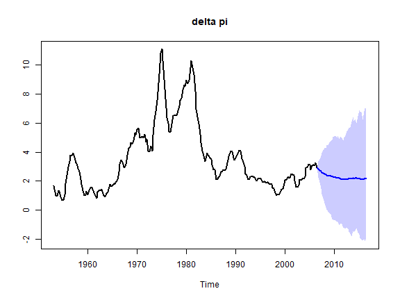
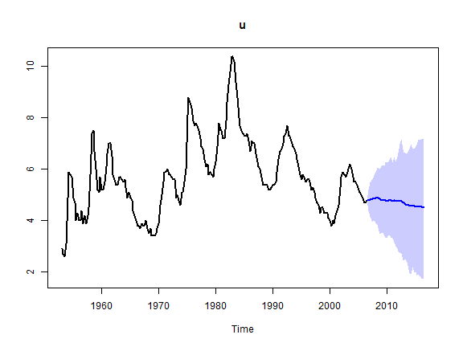
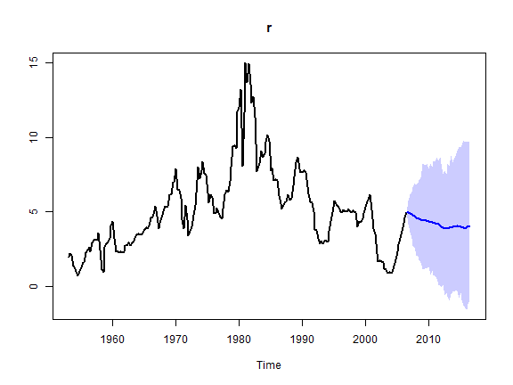
Let us plot the log volatility estimates and predictions
stochastic_volatility_plot(bvar_obj, ci = 0.95, vol = "log_lambda")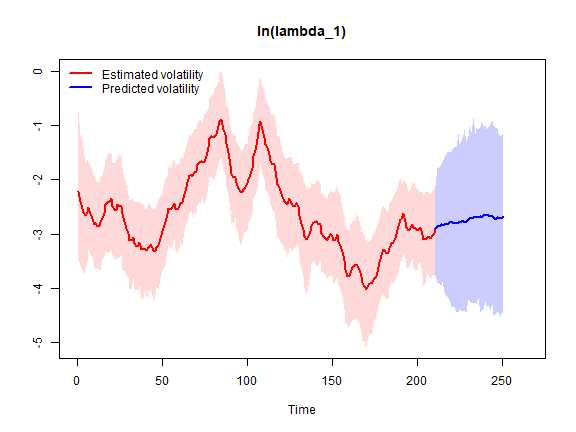
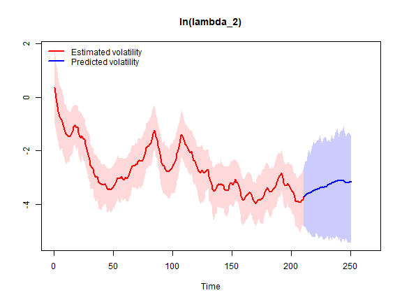
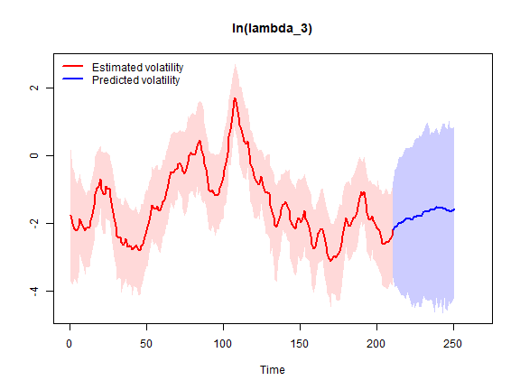
Let us plot the estimates and predictions of the implied innovation standard deviations
stochastic_volatility_plot(bvar_obj, vol = "sd")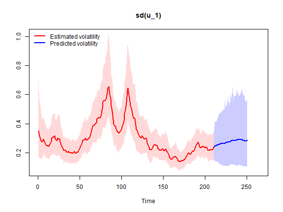
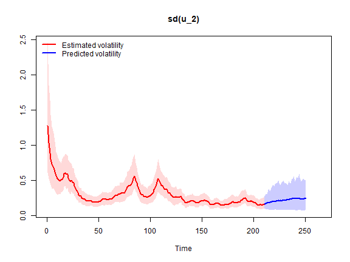
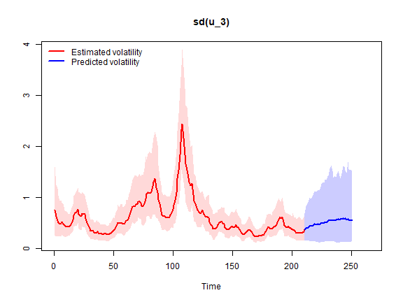
We can also produce orthogonalized IRFs
IRF(bvar_obj, method = "OIRF", t=215, ci=0.68) #latest t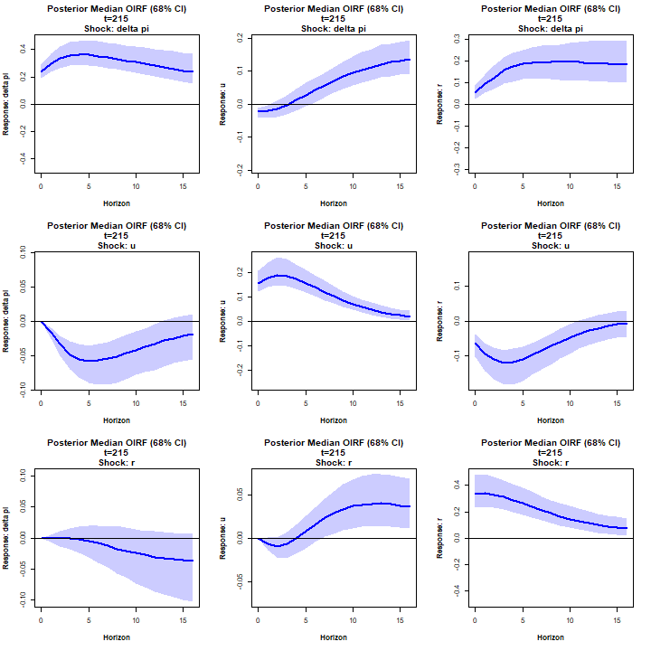
References
Clark, T. E. (2011). Real-Time Density Forecasts from Bayesian Vector Autoregressions with Stochastic Volatility. Journal of Business & Economic Statistics. 29(3), pp. 327–341.
Koop, G. and Korobilis, D. (2010). Bayesian Multivariate Time Series Methods for Empirical Macroeconomics. Foundations and Trends in Econometrics. 3(4), pp. 267-358.
Villani, M. (2009). Steady-state priors for vector autoregressions. Journal of Applied Econometrics. 24(4), pp. 630-650.